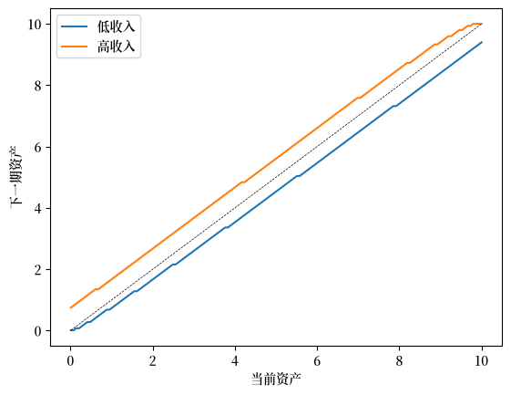

70. 收入波动问题 I：离散化与 VFI#
GPU
本讲座是在配有GPU的机器上构建的——不过没有GPU也可以运行。
Google Colab 提供带GPU的免费套餐，使用方法如下：
点击右上角的”播放”图标
选择 Colab
将运行时环境设置为包含GPU
70.1. 概述#
在本讲中，我们研究一个无限存活消费者的最优储蓄问题——即 [Ljungqvist and Sargent, 2018] 第 1.3 节中描述的”共同祖先”。
这个储蓄问题通常被称为收入波动问题或家庭问题。
它是许多代表性宏观经济模型的一个基本子问题
等等
它与 最优储蓄 III：随机回报 中的决策问题相关，但在一些重要方面有所不同。
例如，
该主体的选择问题包含一个可加性收入项，这会导致一个偶尔起约束作用的约束。
影响预算约束的冲击是相关的，这迫使我们跟踪一个额外的状态变量。
我们将从一个相对基础的模型版本开始，通过传统的离散化 + 值函数迭代来求解它。
尽管这种方法并不是最快或最高效的，但它非常稳健和灵活。
例如，如果我们突然决定加入 Epstein–Zin 偏好，或者将普通的条件期望修改为分位数，该技术仍然能够很好地工作。
备注
对于我们将使用的其他一些方法（例如内生网格法），情况就并非如此。
这是计算与分析中的一条普遍规律——虽然我们通常可以通过利用结构来设计更快的算法，但这些新算法通常不那么稳健。
它们之所以不那么稳健，恰恰是因为它们利用了更多的结构——这意味着它们不可避免地更容易受到变化的影响。
除了 Anaconda 之外，本讲还需要以下库：
!pip install quantecon jax
我们将使用以下导入：
import quantecon as qe
import jax
import jax.numpy as jnp
import matplotlib.pyplot as plt
import matplotlib as mpl
FONTPATH = "fonts/SourceHanSerifSC-SemiBold.otf"
mpl.font_manager.fontManager.addfont(FONTPATH)
plt.rcParams['font.family'] = ['Source Han Serif SC']
from typing import NamedTuple
from time import time
我们将使用 64 位浮点数以获得额外的精度。
jax.config.update("jax_enable_x64", True)
70.2. 设置#
我们研究一个家庭，它选择一个状态相依的消费计划 \(\{c_t\}_{t \geq 0}\) 以最大化
约束条件为
其中
\(c_t\) 是消费且 \(c_t \geq 0\)，
\(a_t\) 是资产且 \(a_t \geq 0\)，
\(R = 1 + r\) 是总回报率，
\((y_t)_{t \geq 0}\) 是劳动收入，取值于某个有限集 \(\mathsf Y\)。
我们在下面假设劳动收入动态遵循一个离散化的 AR(1)过程。
我们设 \(\mathsf S := \mathbb{R}_+ \times \mathsf Y\)，它表示状态空间。
值函数 \(V \colon \mathsf S \to \mathbb{R}\) 定义为
其中最大化是在给定 \((a_0, y_0) = (a, y)\) 时所有可行的消费序列上进行的。
贝尔曼方程为
其中
在代码中我们使用函数
来封装贝尔曼方程的右侧。
70.3. 代码#
以下代码定义了一个 NamedTuple 来存储模型参数和网格。
class Model(NamedTuple):
β: float # 贴现因子
R: float # 总利率
γ: float # CRRA 参数
a_grid: jnp.ndarray # 资产网格
y_grid: jnp.ndarray # 收入网格
Q: jnp.ndarray # 收入的马尔可夫矩阵
def create_consumption_model(
R=1.01, # 总利率
β=0.98, # 贴现因子
γ=2, # CRRA 参数
a_min=0.01, # 最小资产
a_max=10.0, # 最大资产
a_size=150, # 网格大小
ρ=0.9, ν=0.1, y_size=100 # 收入参数
):
"""
创建消费-储蓄模型的一个实例。
"""
a_grid = jnp.linspace(a_min, a_max, a_size)
mc = qe.tauchen(n=y_size, rho=ρ, sigma=ν)
y_grid, Q = jnp.exp(mc.state_values), jax.device_put(mc.P)
return Model(β, R, γ, a_grid, y_grid, Q)
现在我们定义贝尔曼方程的右侧。
我们将使用一种类似于 Matlab 和 NumPy 的向量化编码风格（避免所有循环）。
我们邀请你在练习中探索一种基于 jax.vmap 的替代风格。
@jax.jit
def B(v, model):
"""
贝尔曼方程右侧（最大化之前）的向量化版本，它是一个表示
B(a, y, a′) = u(Ra + y - a′) + β Σ_y′ v(a′, y′) Q(y, y′)
的 3D 数组，涵盖所有 (a, y, a′)。
"""
# 解包
β, R, γ, a_grid, y_grid, Q = model
a_size, y_size = len(a_grid), len(y_grid)
# 将当前奖励 r(a, y, ap) 计算为数组 r[i, j, ip]
a = jnp.reshape(a_grid, (a_size, 1, 1)) # a[i] -> a[i, j, ip]
y = jnp.reshape(y_grid, (1, y_size, 1)) # z[j] -> z[i, j, ip]
ap = jnp.reshape(a_grid, (1, 1, a_size)) # ap[ip] -> ap[i, j, ip]
c = R * a + y - ap
# 计算所有 (a, y, ap) 组合下的延续奖励
v = jnp.reshape(v, (1, 1, a_size, y_size)) # v[ip, jp] -> v[i, j, ip, jp]
Q = jnp.reshape(Q, (1, y_size, 1, y_size)) # Q[j, jp] -> Q[i, j, ip, jp]
EV = jnp.sum(v * Q, axis=3) # 对最后一个索引 jp 求和
# 计算贝尔曼方程的右侧
return jnp.where(c > 0, c**(1-γ)/(1-γ) + β * EV, -jnp.inf)
一些读者可能会担心我们正在创建高维数组，从而导致效率低下。
能否通过更仔细的向量化来避免它们？
事实上这并不必要：这个函数将由 JAX 进行 JIT 编译，而 JIT 编译器将优化编译后的代码以最小化内存使用。
贝尔曼算子 \(T\) 可以通过以下方式实现
@jax.jit
def T(v, model):
"贝尔曼算子。"
return jnp.max(B(v, model), axis=2)
下一个函数在给定 \(v\) 的情况下计算一个 \(v\)-贪婪策略（即最大化贝尔曼方程右侧的策略）。
@jax.jit
def get_greedy(v, model):
"计算 v-贪婪策略，以一组索引的形式返回。"
return jnp.argmax(B(v, model), axis=2)
70.3.1. 值函数迭代#
现在我们定义一个实现 VFI 的求解器。
首先，我们使用标准的 Python 循环编写一个简单的版本。
def value_function_iteration_python(model, tol=1e-5, max_iter=10_000):
"""
使用 Python 循环通过逐次近似实现 VFI。
"""
v = jnp.zeros((len(model.a_grid), len(model.y_grid)))
error = tol + 1
k = 0
while error > tol and k < max_iter:
v_new = T(v, model)
error = jnp.max(jnp.abs(v_new - v))
v = v_new
k += 1
return v, get_greedy(v, model)
接下来我们编写一个使用 jax.lax.while_loop 的版本。
@jax.jit
def value_function_iteration(model, tol=1e-5, max_iter=10_000):
"""
使用逐次近似实现 VFI。
"""
def body_fun(k_v_err):
k, v, error = k_v_err
v_new = T(v, model)
error = jnp.max(jnp.abs(v_new - v))
return k + 1, v_new, error
def cond_fun(k_v_err):
k, v, error = k_v_err
return jnp.logical_and(error > tol, k < max_iter)
v_init = jnp.zeros((len(model.a_grid), len(model.y_grid)))
k, v_star, error = jax.lax.while_loop(cond_fun, body_fun,
(1, v_init, tol + 1))
return v_star, get_greedy(v_star, model)
70.3.2. 计时#
让我们创建一个实例并比较两种实现。
model = create_consumption_model()
首先让我们对 Python 版本计时。
print("Starting VFI using Python loop.")
start = time()
v_star_python, σ_star_python = value_function_iteration_python(model)
python_time = time() - start
print(f"VFI completed in {python_time} seconds.")
Starting VFI using Python loop.
VFI completed in 7.453008413314819 seconds.
现在让我们对 jax.lax.while_loop 版本计时。
print("Starting VFI using jax.lax.while_loop.")
start = time()
v_star_jax, σ_star_jax = value_function_iteration(model)
v_star_jax.block_until_ready()
jax_with_compile = time() - start
print(f"VFI completed in {jax_with_compile} seconds.")
Starting VFI using jax.lax.while_loop.
VFI completed in 1.1955876350402832 seconds.
让我们再次运行它以消除编译时间。
start = time()
v_star_jax, σ_star_jax = value_function_iteration(model)
v_star_jax.block_until_ready()
jax_without_compile = time() - start
print(f"VFI completed in {jax_without_compile} seconds.")
VFI completed in 1.1023180484771729 seconds.
让我们检查这两种实现是否产生相同的结果。
print(f"Values match: {jnp.allclose(v_star_python, v_star_jax)}")
print(f"Policies match: {jnp.allclose(σ_star_python, σ_star_jax)}")
Values match: True
Policies match: True
这是使用 jax.lax.while_loop 带来的加速。
print(f"Relative speed = {python_time / jax_without_compile:.2f}")
Relative speed = 6.76
70.3.3. 资产动态#
为了理解长期行为，让我们考察最优策略下的资产积累动态。
以下 45 度图展示了资产如何随时间演变：
fig, ax = plt.subplots()
# 绘制第一个和最后一个收入状态的资产积累
for j, label in zip([0, -1], ['低收入', '高收入']):
# 获取每个当前资产水平的下一期资产
a_next = model.a_grid[σ_star_jax[:, j]]
ax.plot(model.a_grid, a_next, label=label)
# 添加 45 度线
ax.plot(model.a_grid, model.a_grid, 'k--', linewidth=0.5)
ax.set(xlabel='当前资产', ylabel='下一期资产')
ax.legend()
plt.show()
findfont: Failed to find font weight normal, now using 600.

该图展示了每个收入状态的资产积累规则。
虚线是 45 度线，表示 \(a_{t+1} = a_t\) 的点。
我们看到：
对于低收入水平，资产往往会减少（位于 45 度线下方的点）
对于高收入水平，在低资产水平时资产往往会增加
该动态表明会收敛到一个平稳分布
70.4. 练习#
练习 70.1
在本练习中，我们探索一种使用 jax.vmap 实现值函数迭代的替代方法。
对于这个简单的最优储蓄问题，直接向量化相对容易。
特别地，将贝尔曼方程的右侧表示为一个数组是很直接的，该数组存储了在每个状态和控制下对该函数的求值。
然而，对于更复杂的模型，直接向量化可能要困难得多。
出于这个原因，掌握另一种实现快速 JAX 实现的方法会很有帮助。
你的任务是实现一个版本，它：
将贝尔曼算子的右侧写成关于单个状态和控制的函数，以及
在外部应用
jax.vmap以实现并行化求解。
具体来说：
重写
B，使其接受对应于(a, y, a′)的索引(i, j, ip)，并计算这些特定索引的贝尔曼方程。依次使用
jax.vmap对所有索引进行向量化（使用前面示例中展示的分阶段 vmap）。使用向量化的
B实现T_vmap和get_greedy_vmap函数。使用
jax.lax.while_loop实现value_iteration_vmap。测试你的实现是否产生与直接向量化方法相同的结果。
比较两种方法的执行时间。
解答 练习 70.1
这是一个解决方案。
首先让我们重写 B 使其与单个索引一起工作：
def B(v, model, i, j, ip):
"""
最大化之前贝尔曼方程的右侧，其形式为
B(a, y, a′) = u(Ra + y - a′) + β Σ_y′ v(a′, y′) Q(y, y′)
索引为 (i, j, ip) -> (a, y, a′)。
"""
β, R, γ, a_grid, y_grid, Q = model
a, y, ap = a_grid[i], y_grid[j], a_grid[ip]
c = R * a + y - ap
EV = jnp.sum(v[ip, :] * Q[j, :])
return jnp.where(c > 0, c**(1-γ)/(1-γ) + β * EV, -jnp.inf)
现在我们依次应用 vmap 来模拟嵌套循环。
B_1 = jax.vmap(B, in_axes=(None, None, None, None, 0))
B_2 = jax.vmap(B_1, in_axes=(None, None, None, 0, None))
B_vmap = jax.vmap(B_2, in_axes=(None, None, 0, None, None))
这是 vmap 情况下的贝尔曼算子和 get_greedy 函数。
@jax.jit
def T_vmap(v, model):
"贝尔曼算子。"
a_indices = jnp.arange(len(model.a_grid))
y_indices = jnp.arange(len(model.y_grid))
B_values = B_vmap(v, model, a_indices, y_indices, a_indices)
return jnp.max(B_values, axis=-1)
@jax.jit
def get_greedy_vmap(v, model):
"计算 v-贪婪策略，以一组索引的形式返回。"
a_indices = jnp.arange(len(model.a_grid))
y_indices = jnp.arange(len(model.y_grid))
B_values = B_vmap(v, model, a_indices, y_indices, a_indices)
return jnp.argmax(B_values, axis=-1)
这是迭代例程。
def value_iteration_vmap(model, tol=1e-5, max_iter=10_000):
"""
使用 vmap 和逐次近似实现 VFI。
"""
def body_fun(k_v_err):
k, v, error = k_v_err
v_new = T_vmap(v, model)
error = jnp.max(jnp.abs(v_new - v))
return k + 1, v_new, error
def cond_fun(k_v_err):
k, v, error = k_v_err
return jnp.logical_and(error > tol, k < max_iter)
v_init = jnp.zeros((len(model.a_grid), len(model.y_grid)))
k, v_star, error = jax.lax.while_loop(cond_fun, body_fun,
(1, v_init, tol + 1))
return v_star, get_greedy_vmap(v_star, model)
让我们看看使用 vmap 方法求解模型需要多长时间。
print("Starting VFI using vmap.")
start = time()
v_star_vmap, σ_star_vmap = value_iteration_vmap(model)
v_star_vmap.block_until_ready()
jax_vmap_with_compile = time() - start
print(f"VFI completed in {jax_vmap_with_compile} seconds.")
Starting VFI using vmap.
VFI completed in 1.0574872493743896 seconds.
让我们再次运行它以消除编译时间。
start = time()
v_star_vmap, σ_star_vmap = value_iteration_vmap(model)
v_star_vmap.block_until_ready()
jax_vmap_without_compile = time() - start
print(f"VFI completed in {jax_vmap_without_compile} seconds.")
VFI completed in 1.0143959522247314 seconds.
我们需要确保得到相同的结果。
print(jnp.allclose(v_star_vmap, v_star_jax))
print(jnp.allclose(σ_star_vmap, σ_star_jax))
True
True
这是与第一个 JAX 实现（使用直接向量化）的比较。
print(f"Relative speed = {jax_without_compile / jax_vmap_without_compile}")
Relative speed = 1.0866743366430183
两个 JAX 版本的执行时间相对相近。
然而，正如上面所强调的，掌握第二种方法（即 vmap 方法）在面对具有更复杂贝尔曼方程的动态规划问题时会很有帮助。